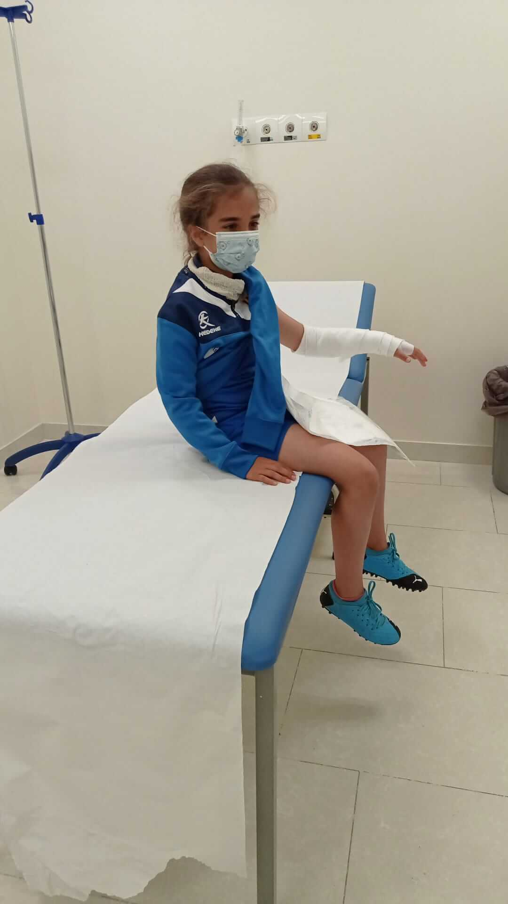

Campeona Prebenjamín (2018/2019)
Con solo 7 años, Cayetana lideró al Ogíjares 89 C.F. como única niña en un equipo masculino y se proclamó Campeona de Liga en su primera temporada. Un logro histórico que marcó el inicio de una carrera brillante.

Regreso tras Lesión (2022)
Superó una fractura en el brazo que le impidió participar en su primera convocatoria con la Selección Granadina. Volvió a los terrenos de juego con más fuerza, carácter y determinación que nunca. La adversidad no la detuvo.

Copa de Andalucía con la Selección Granadina (Enero 2023)
Fue titular con la Selección Granadina Alevín Femenina en la Copa de Andalucía, celebrada del 26 al 28 de enero de 2023. Destacó por su entrega, liderazgo y capacidad defensiva representando a su provincia.
Fichaje por el Granada C.F. S.A.D. (2023/2024)
Gran salto en su carrera al fichar por el Granada C.F. S.A.D. Fue nombrada Capitana del equipo Infantil, marcó 4 goles en 23 partidos (21 como titular) y el equipo finalizó subcampeón de liga.
Subida al Cadete siendo Infantil (2024/2025)
Siendo todavía infantil, fue promovida al Cadete Femenino de 1ª Andaluza del Granada CF S.A.D. Titular en los 24 partidos disputados, marcó 11 goles y dio varias asistencias. Una temporada histórica.
Gol como Capitana frente a Jaén (Noviembre 2024)
Durante su convocatoria con la Selección Granadina Sub-14, Cayetana no solo fue una de las capitanas: también marcó un impresionante gol ante la selección de Jaén. Un momento que quedará grabado en su historia.

Selección Granadina Sub-16 (2025/2026)
Convocada por la Selección Granadina Sub-16 para los partidos de ida y vuelta entre el 21 de octubre y el 4 de noviembre de 2025. Un reconocimiento a su nivel y proyección como futbolista de élite.
Cero Tarjetas en Toda la Carrera
A lo largo de más de 150 partidos disputados en 8 temporadas, Cayetana no ha recibido ni una sola tarjeta. Un récord que refleja su disciplina, inteligencia táctica y respeto por el juego limpio.